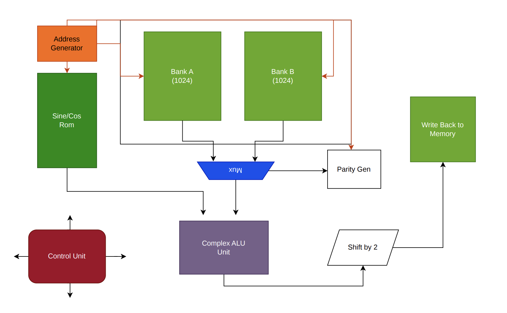

FFT ASIC Accelerator
An ongoing hardware-design project exploring the implementation of a Fast Fourier Transform accelerator in synthesizable RTL with an ASIC-oriented design flow.
View on GitHub ↗RTL Architecture

High-level RTL architecture showing the address generator, sine/cosine ROM, dual memory banks, mux, parity generation, complex ALU, control unit, shift stage, and write-back path.
Project Goals
Hardware FFT
Implement an FFT directly in hardware for power-of-two transform sizes, targeting designs from 64 through 1024 points.
Fixed-Point DSP
Use fixed-point arithmetic while balancing numerical accuracy, hardware area, and power.
ASIC-Oriented RTL
Keep the design synthesizable and vendor-independent so it can map cleanly into a standard-cell ASIC flow.
Verification
Develop a self-checking verification environment that compares hardware results against a software golden model.
Why I'm Building It
This project is an opportunity to work through the full digital-design process—from architecture and RTL through simulation, synthesis, and eventually physical implementation—while learning the hardware tradeoffs behind FFT architectures such as iterative and pipelined datapaths.